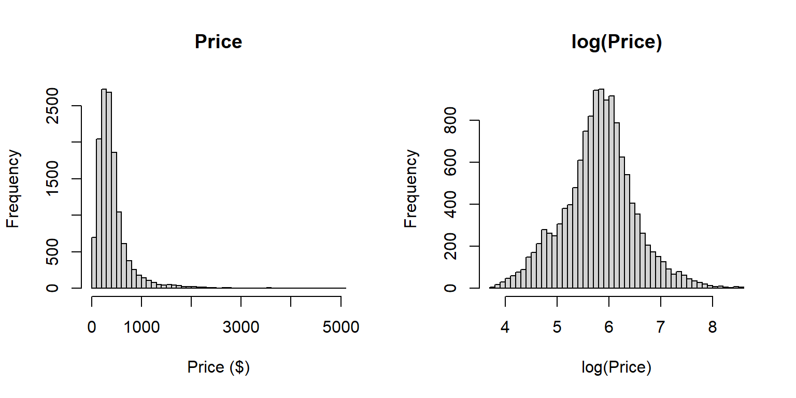
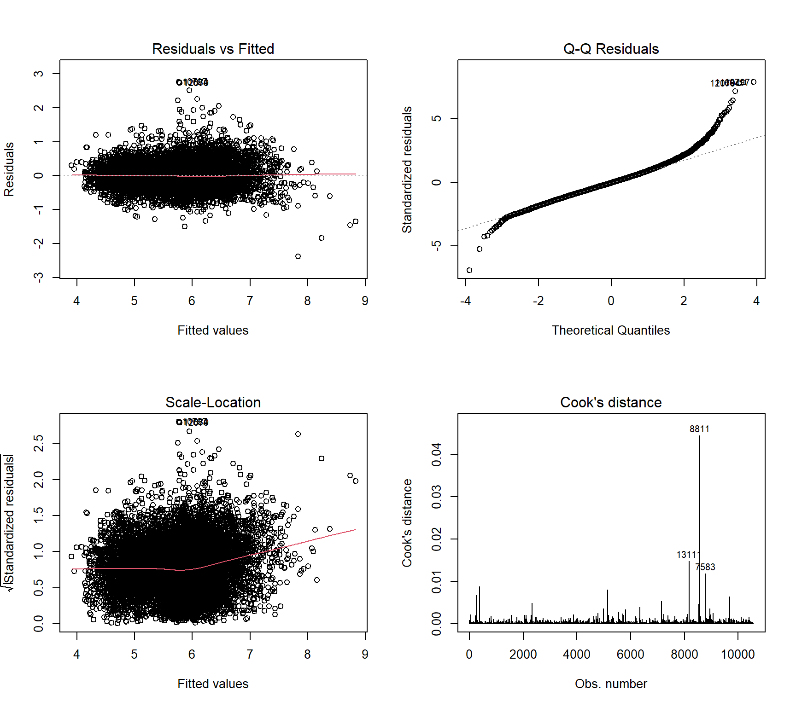

The regression analysis uses the cleaned Sydney Airbnb dataset, which contains 13,219 listings and 19 variables with no missing values. The response variable is the nightly price of a listing. The explanatory variables describe the size of the listing (accommodates, bedrooms, bathrooms), its type (room type, shared or private bathroom), host and review characteristics (superhost status, review rating, number of reviews, availability, minimum nights) and its location (local government area, LGA).
Price is strongly right-skewed (mean $429.5, median $341, maximum $5,077; Figure 1), so a small number of very expensive listings dominate the raw scale. We therefore model log(price), which is approximately symmetric (mean 5.81, median 5.83). This also lets coefficients be interpreted as approximate percentage changes in price. Listings with zero bedrooms correspond to studios and were retained.
price log_price accommodates bedrooms
Min. : 41.5 Min. :3.726 Min. : 1.000 Min. : 0.00
1st Qu.: 225.0 1st Qu.:5.416 1st Qu.: 2.000 1st Qu.: 1.00
Median : 341.0 Median :5.832 Median : 4.000 Median : 1.00
Mean : 429.5 Mean :5.809 Mean : 4.089 Mean : 1.79
3rd Qu.: 494.9 3rd Qu.:6.204 3rd Qu.: 6.000 3rd Qu.: 2.00
Max. :5076.8 Max. :8.532 Max. :16.000 Max. :11.00
bathrooms minimum_nights availability_365 number_of_reviews
Min. : 0.000 Min. : 1.000 Min. : 1.0 Min. : 1.00
1st Qu.: 1.000 1st Qu.: 1.000 1st Qu.: 86.0 1st Qu.: 7.00
Median : 1.000 Median : 2.000 Median :177.0 Median : 24.00
Mean : 1.453 Mean : 2.075 Mean :187.1 Mean : 54.61
3rd Qu.: 2.000 3rd Qu.: 2.000 3rd Qu.:290.0 3rd Qu.: 66.00
Max. :12.000 Max. :30.000 Max. :365.0 Max. :1166.00
review_rating
Min. :1.000
1st Qu.:4.660
Median :4.840
Mean :4.727
3rd Qu.:4.960
Max. :5.000
table(df$room_type)
Entire home/apt Private room
10774 2445
table(df$shared_bath)
Private Shared
11734 1485
table(df$superhost)
Not superhost Superhost
7507 5712
nlevels(df$lga)
[1] 38
par(mfrow =c(1, 2))hist(df$price, breaks =50, main ="Price", xlab ="Price ($)")hist(df$log_price, breaks =50, main ="log(Price)", xlab ="log(Price)")par(mfrow =c(1, 1))

Figure 1: Distribution of price (left) and log(price) (right)
Variable selection and data split
Variables were selected on the basis of relevance to pricing and to avoid overlap between predictors. The identifier, raw price, latitude, longitude, property type, bedroom group and reviews in the last 12 months were excluded: LGA already captures location, room type captures the main property-type distinction, and the excluded review and bedroom variables duplicate information in number_of_reviews and bedrooms. Number of reviews and minimum nights are right-skewed, so they were log-transformed.
Exploratory plots (Figure 2) show that entire homes are priced substantially higher than private rooms, and that price rises steadily with the number of bedrooms and the number of guests accommodated. Superhost status shows little visible difference in price. Accommodates (r = 0.65) and bedrooms (r = 0.62) had the strongest correlations with log(price), followed by bathrooms (r = 0.44) and review rating (r = 0.24), whereas availability and minimum nights were close to zero.
To assess predictive performance, the data were randomly split into a training set (80%, n = 10,575) and a test set (20%, n = 2,644). Models are fitted on the training set and evaluated on the unseen test set.
# Log-transform the two skewed predictorsdf$log_reviews <-log(df$number_of_reviews)df$log_minnights <-log(df$minimum_nights)# Correlation of each numeric variable with log_pricenum_vars <-c("log_price", "accommodates", "bedrooms", "bathrooms","minimum_nights", "availability_365", "number_of_reviews","reviews_last_12m", "review_rating")round(cor(df[, num_vars])[, "log_price"], 2)
Table 1: Comparison of candidate regression models
Model
Predictors
R2
Adj_R2
Test_RMSE
M1
1
0.421
0.421
0.537
M2
5
0.624
0.624
0.436
M3
10
0.638
0.637
0.429
M4
47
0.744
0.743
0.358
Model building and comparison
The models were compared using R², adjusted R², F-tests between successive models and RMSE on the held-out test set (Table 1). R² increases whenever predictors are added, so adjusted R² was used to check that the gain was genuine. Adding size and type variables raised adjusted R² from 0.421 to 0.624, host and review variables raised it slightly to 0.637, and adding location raised it to 0.743. F-tests comparing each model with the previous one were significant at every step (all p-values [fill in from your anova output]), including the addition of LGA (F = 118.2, p < 0.001). M4 also had the lowest test RMSE (0.358), so its better fit was not due to overfitting. M4 was therefore selected as the final model.
Final model
summary(m4)$coefficients[1:11, ] # first 11 rows: intercept + main predictors
The models were compared using R², adjusted R², F-tests between successive models and the RMSE on the held-out test set (Table 1). R² cannot fall when predictors are added, so adjusted R² was used to check that the gains were genuine; the two values are almost identical here because the sample is large. Adding size and type variables raised adjusted R² from 0.421 to 0.624 (F = 2090.1, p < 0.001), host and review variables raised it only slightly to 0.637 (F = 108.5, p < 0.001), and adding location raised it to 0.743 (F = 118.2, p < 0.001). Every step was therefore statistically significant, but the improvement from host and review variables was small in practice, whereas size, type and location were the most important. M4 also had the lowest test RMSE (0.358), so its better fit is not due to overfitting, and it was selected as the final model despite having 47 predictors.
Diagnostics
par(mfrow =c(2, 2))plot(m4, which =1:4)par(mfrow =c(1, 1))

Figure 3: Diagnostic plots for the final model (M4)
Residuals vs Fitted: an even band around zero, so a linear model on the log scale is reasonable. Q-Q plot: close to the line in the middle but bending at the ends, so a few very expensive listings are poorly predicted. Scale-Location: roughly flat, with a slight rise at high fitted values, so the spread is mostly even. Cook’s distance: no point stands far above the rest (maximum about 0.04), so no single listing drives the model.
Figure 4: Predicted versus actual log(price) on the test set
The model was tested on the 20% of listings it never saw. Test R² is 0.735 and RMSE is 0.358. These are close to the training values (adjusted R² 0.743), so the model is not overfitting. Points in Figure 4 follow the red line, with more scatter and some under-prediction at high prices.
Limitations
The model explains about three quarters of the variation in price, and the rest is due to things not in the data, such as photo quality, views and exact street location. Errors are larger for very expensive listings (heavy tails in the Q-Q plot). The results show association, not cause. Prices are asking prices from one point in time.
Summary
This section modelled the nightly price of Sydney Airbnb listings using multiple linear regression. Price was log-transformed because it is strongly right-skewed. Four nested models were compared, and the final model (M4), which includes listing size, type, host and review variables and location (LGA), explained about 74% of the variation in log(price) (adjusted R² = 0.743) and had the highest adjusted R² and the lowest test error. Private rooms and shared bathrooms were associated with lower prices (about 41% and 24% lower), while more bedrooms, bathrooms and guests and higher review ratings were associated with higher prices. Superhost status had no clear effect, and location improved the model significantly. The model predicted unseen listings well (test R² = 0.735), although it is less reliable for very expensive listings and shows association rather than cause.